About us
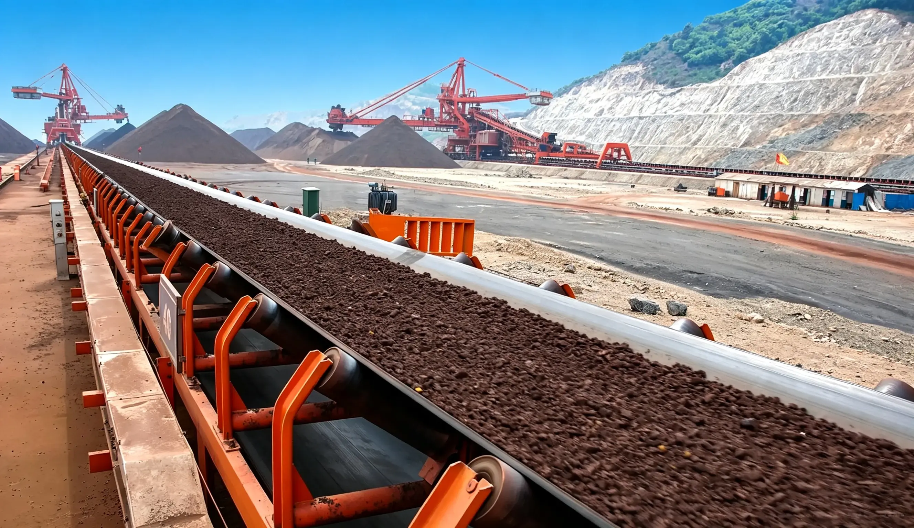
KDHI, Established in 1993, is a global technology leader specializing in advanced equipment and heavy machinery manufacturing for bulk material handling systems (specially belt conveyors and its systems includes main components like Idler,pulley,drive, steelworks, and control system). we have grown to serve clients across over 50 countries in mining, ports, metallurgy, chemical, grain and other industries.
We own 4 production bases & 33 independent patented technologies. Our team of over 800 staff includes 126 senior professional engineers, complying with global standards like GB, ISO, CEMA, AS, DIN, JS, EC and GOST... .
Our mission is to empower industries with cutting-edge conveying technology, enabling them to achieve operational excellence and sustainable growth. We combine expertise in belt conveyor design, manufacturing, and lifecycle management to deliver comprehensive solutions.
KDHI delivers fully integrated solutions for belt conveyor systems, from design and engineering to manufacturing, installation, and long-term lifecycle support. Our expertise helps customers improve efficiency, reliability, and safety across mining, ports, metallurgy, power, and chemical industries.
With a strong R&D base, advanced manufacturing capabilities, and a global service network, KDHI continues to provide cost-effective and innovative conveying technology for large-scale industrial projects worldwide.
We can provide a wide range of belt conveyor solutions, including:- Normal 35°, 40° and 45° Trough Belt Conveyor
- Tubular Belt Conveyor
- Long Distance Overland Belt Conveyor
- Downhill Conveying Regenerative Belt Conveyor
- Wide Belt Width Conveyor (up to BW 2,400mm)
- High-Angle Belt Conveyor
- Shiftable Belt Conveyor
- Heavy Duty Belt Conveyor (up to 28,000tph)
- Steelworks: Trusses, galleries, transfer towers
- Electrical and Control Systems for Conveyors and Their Supporting Systems
International Standard Certifications of KDHI
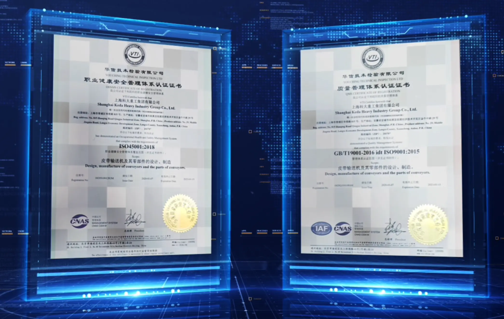
KDHI is fully certified with internationally recognized management systems and EU product safety certification to guarantee standardized production and global product compliance.
Authoritative Standard Certifications:
▪ ISO 9001:2015 Quality Management System
▪ ISO 45001:2018 Occupational Health & Safety Management System
▪ ISO 14001:2015 Environmental Management System
▪ EN 1090 Execution of steel structures and aluminium structures
KDHI has fully obtained ISO 9001, ISO 14001 and ISO 45001 international system certifications, strictly implementing standardized production and quality management in full compliance with global industrial standards.
To support worldwide project delivery, we have built a professional technical team with 215 skilled welders certified with European, American and Australian welding qualifications, covering EN, AWS and AS/NZS standard systems. All welding procedures and workmanship meet international high-standard requirements, ensuring structural safety, manufacturing precision and global project adaptability of equipment.
Professional Engineering Team
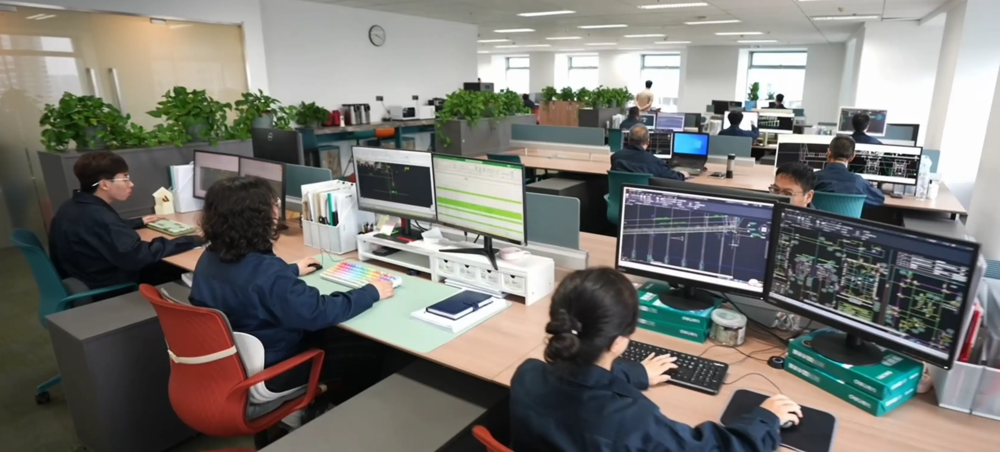
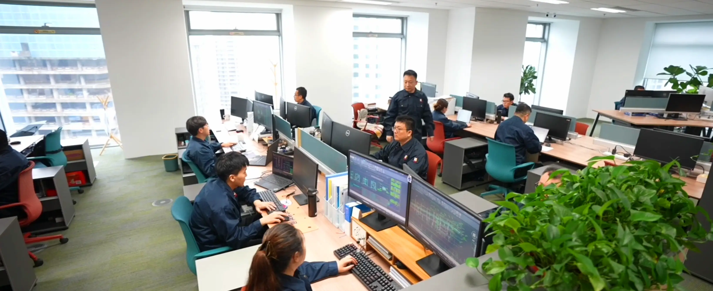
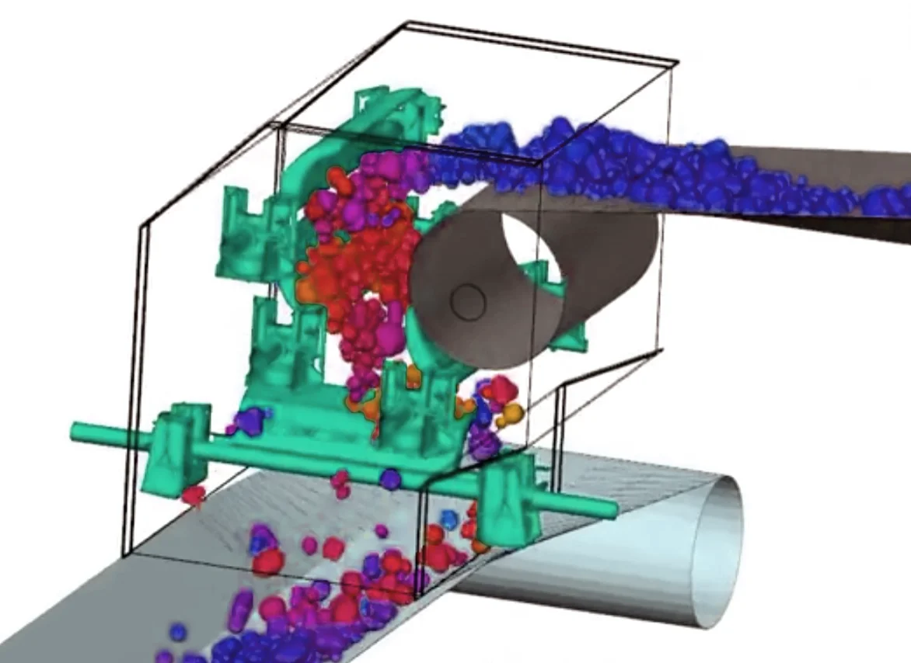
▪ Strong R&D Capability With strong R&D strength, Shanghai Keda Heavy Industry Group has an R&D team composed of top engineering technicians and world-leading design software.
▪ Professional Technical Team KDHI has 126 intermediate and senior technicians, including 6 professors of engineering and 25 senior engineers, covering mechanics, steel structure, power distribution, control and inspection.
▪ Proprietary Core Technologies Possessing 33 proprietary design technologies for belt conveyors with independent intellectual property rights, as well as extensive experience in design, manufacturing, operation and maintenance of belt conveyors.
▪ Patents & Awards KDHI has won numerous national, provincial and municipal Science and Technology Progress Awards and Key New Product Awards. A total of 196 invention and utility model patents have been applied for and granted.
▪ International Standard Services The Group can provide global customers with full life cycle design, production and inspection services complying with GB, ISO, EN, CEMA, DIN, AS, JIS and ГОСТ standards.
Industrial Equipment
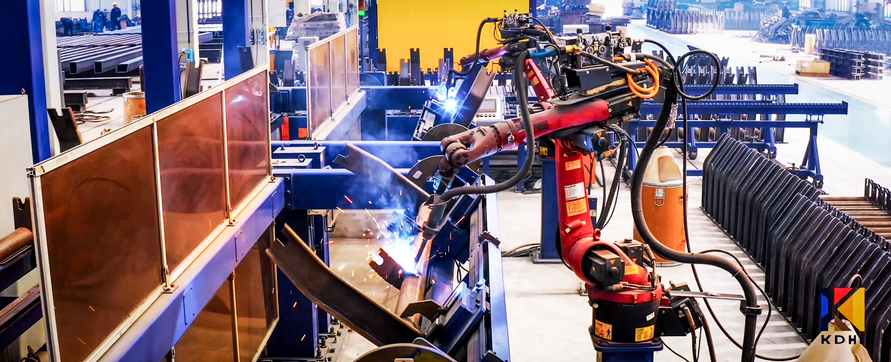
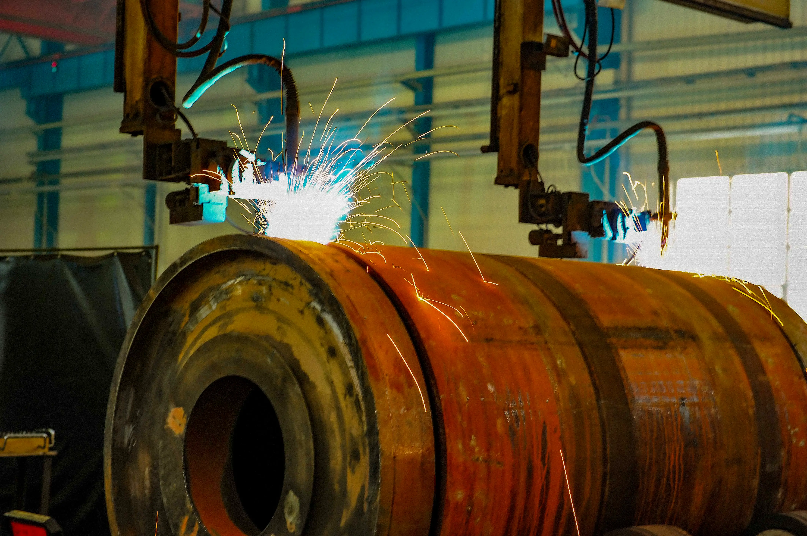
Shanghai Keda Heavy Industry Group has introduced the world's most advanced belt conveyor production and processing technology and proprietary production equipment, realized the intelligent manufacturing of general and standard components. The main production equipment includes:
▪ Pulley production proprietary equipment — Automatic edge shaping equipment, automatic welding equipment and dynamic balance automatic testing equipment etc.
▪ Idler automatic production line
▪ Stringer automatic production line
▪ Idler support automatic welding line with Intelligent Robotic Welding Arms.
▪ Short support automatic welding line
▪ Laser cutting, digital cutting and CNC machining etc.
Main Component Fabrication
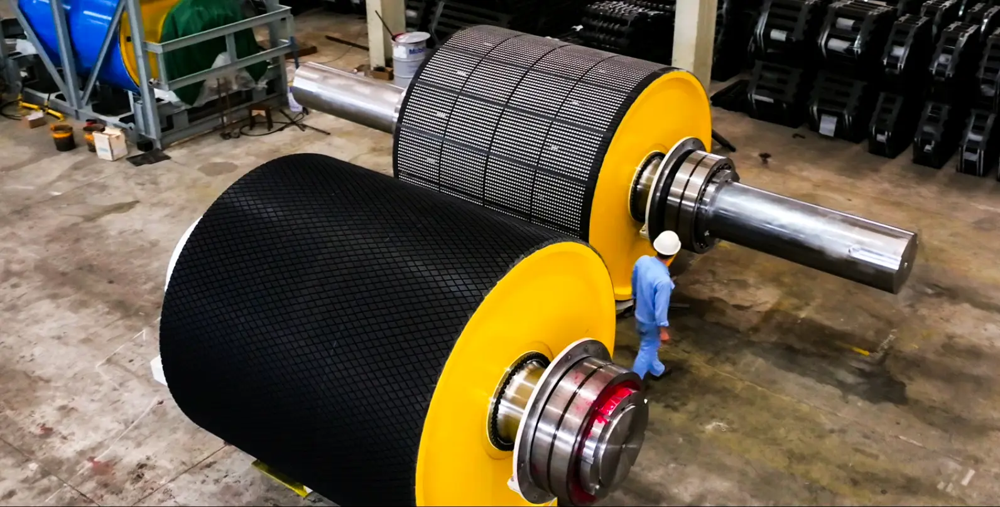

All core proprietary components of belt conveyors, including pulleys, idlers, stringers, short supports, support frame of idlers, various pulley brackets, steel structures such as galleries and transfer towers, are manufactured at KDHI's main production plant.
Idlers
Our idlers adopt ERW resistance welded tubes instead of seamless pipes. Manufactured from precision steel strips, the tubes feature consistent wall thickness, perfect roundness and straightness, ensuring low radial runout and quiet rotation with balanced bearing stress. Smooth inner & outer surfaces protect internal seals, greatly improving bending fatigue resistance and service life of idlers. The material is fully compatible with automatic mass production, delivering uniform dimensional and mechanical performance across all batches. KDHI is capable of manufacturing 700,000 idlers per year.
Pulleys
KDHI manufactures pulleys in various structural designs, including all-welded hub and end disc construction, cast steel hub welded to end discs, and integrally cast steel hub with end discs. Both shell and end disc-to-shell welds employ the one-pass double-sided forming process. Depending on operating conditions, pulleys can be supplied with a plain face, hot-vulcanized rubber lagging in flat, diamond or chevron groove patterns, or ceramic lagging for enhanced wear resistance. Bearing housings can be fitted with standard or taconite seals. Each pulley undergoes static balancing and correction after assembly to ensure smooth operation. KDHI has an annual production capacity of 6,000 pulleys.
Steelworks
KDHI offers comprehensive steel structure manufacturing capabilities for belt conveyors and material handling systems, producing various rotating component supports, drive bases, support structures, galleries, trusses, walkways, and transfer towers in-house. High-precision steel components are machined on dedicated large-scale boring and milling centers. For thick-section, deformation-prone welded structures, multiple stress-relief processes are applied to ensure dimensional stability. Welding operations strictly comply with international standards such as AWS, performed by AWS-certified welders. All welding consumables and procedures are executed in strict accordance with WPS/PQR qualification documents. KDHI has an annual steel structure manufacturing capacity of 80,000 tons.
Quality Control in Manufacturing
A skilled inspection team, professional testing equipment, and standardized inspection procedures are the cornerstones of KDHI's quality assurance system. Our comprehensive end-to-end quality control framework — covering rigorous incoming material inspection, in-process monitoring at every manufacturing stage, and strict final inspection before delivery — delivers robust quality assurance for all KDHI products.
KDHI Company Milestones
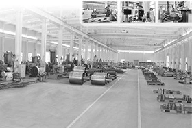
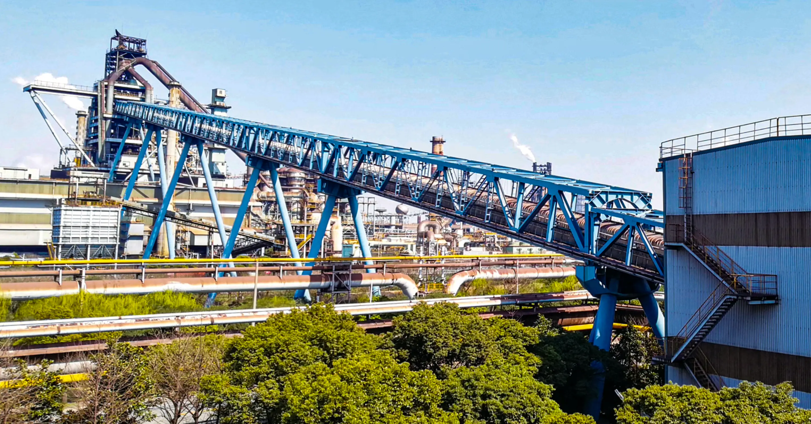
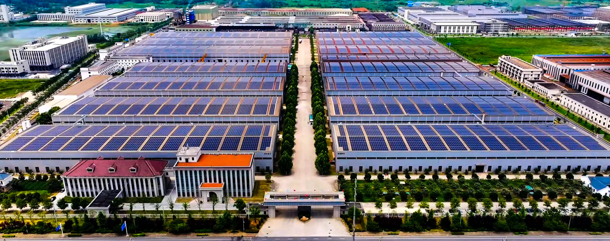
1993
KDHI was established in Qingxi, Shanghai (formerly Shanghai Qingpu Lifting & Conveying Equipment Factory). The company focused on belt conveyors and general lifting equipment, starting with a plant area of 2,050 m², registered capital of RMB 50,000, and a team of only 10 employees.
1996
KDHI successfully developed belt conveyors for 2,500 m³ blast furnaces, laying a critical technical foundation for the company's future large-capacity and wide-width conveyor product lines. A new manufacturing base was launched in Shanghai Qingpu Industrial Park, covering 26,339 m².
2004
The company entered a decade of rapid and stable development, with registered capital increased to RMB 100 million and staff expanded to 150 employees.
2006
The second production plant was completed with an area of 40,905 m². With 350 employees, KDHI achieved an annual conveyor production capacity of RMB 500 million.
2007
KDHI delivered equipment for the Luojing Port Phase II project, adopting variable-frequency soft-start technology and leading a new industry trend of energy-saving and environmentally friendly conveyor design.
2010
Independently developed one of China's longest tubular belt conveyors at that time, featuring a pipe diameter of 400 mm and a single unit length of 7.1 km. The equipment was successfully applied at Guizhou Nayong Power Plant.
2012
KDHI successfully completed the Vale Brazil Phase I project. Reliable product performance and professional delivery quality earned high recognition from global mining clients.
2013
KDHI established a joint venture with Datong Coal Mine Group, founding Datong Coal-KDHI Equipment Manufacturing Co., Ltd., marking the company's full-scale strategic expansion into the coal material handling industry.
2015
The third manufacturing plant was put into operation, covering 31,862 m². The registered capital increased to RMB 160 million with 505 employees, raising the annual production capacity to RMB 1 billion. In the same year, KDHI developed the world's highest-capacity ore conveyor for Vale Brazil, with a belt width of 2,200 mm and a maximum throughput of 23,500 tons per hour.
2018
KDHI Langxi Manufacturing Base was fully completed and put into operation within only six months, demonstrating outstanding construction efficiency and industrial execution capability. The group's total plant area reached 345,800 m² with 662 employees, achieving an annual conveyor production capacity of RMB 2 billion.
Future Outlook
Adhering to customer-oriented innovation, KDHI continues to upgrade its manufacturing and R&D capabilities, aiming to build a world-class brand and provide global clients with high-performance, reliable, and customized bulk material conveying system solutions.
Convenient Transportation & Logistics
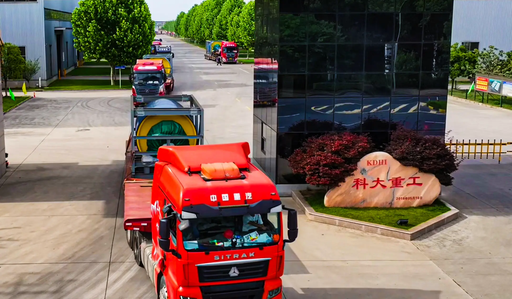
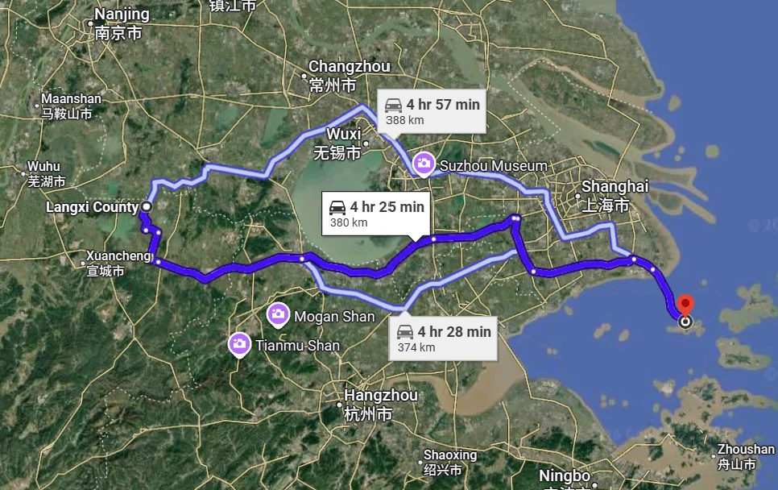
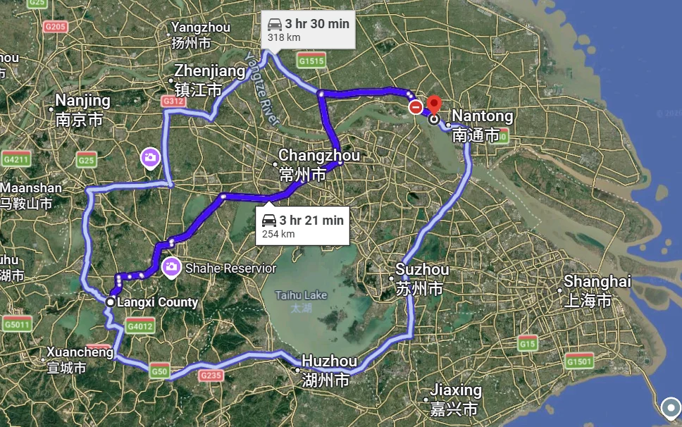
KDHI headquarters and manufacturing facilities, including our Langxi production base, benefit from well-connected highway logistics networks. The Langxi plant is merely 226 kilometers from Nantong Port and 297 kilometers from Shanghai Port via national expressways. Relying on mature local freight services, large-volume goods can be quickly gathered and delivered to major seaports within a short time frame, greatly shortening lead time for global shipments.
1. Shanghai Port Terminal
380 Km with 4.5 hour travel time from Langxi manufacturing base.
2. Nantong Port Terminal
254 Km with 3-hour-21-minute highway trip from Langxi manufacturing base.
Worldwide Coverage
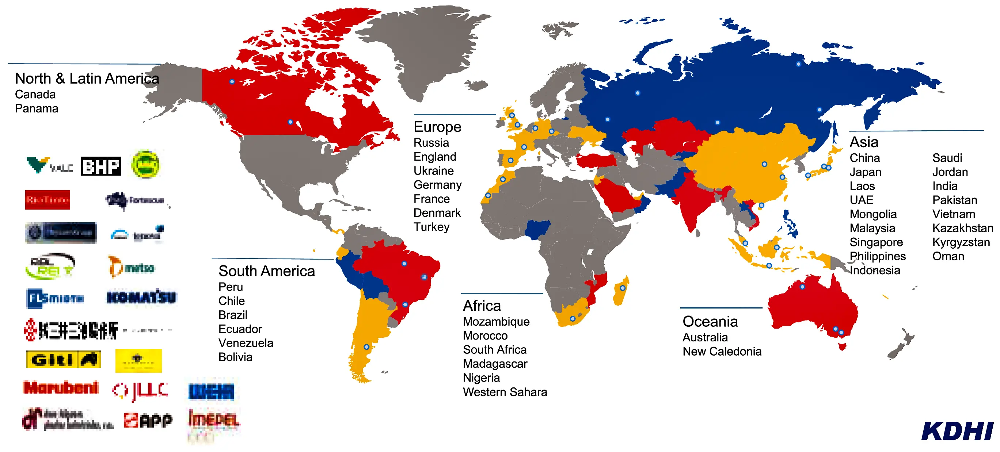
Global presence across North America, South America, Central & South East Asia, Australia, Russia, Africa, with local offices in key regions.
Products exported to over 40 countries worldwide.
KDHI Industry Leadership Qualifications
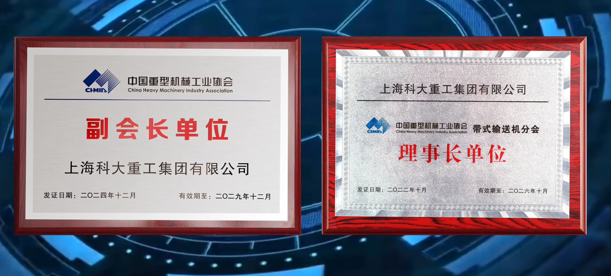
As a core leading enterprise in the material handling machinery industry:
1. Vice Chairman Unit of CHMIA (China Heavy Machinery Industry Association);
2. Chairman Unit of China Belt Conveyor Professional Association.
Charitable Giving & Social Responsibility
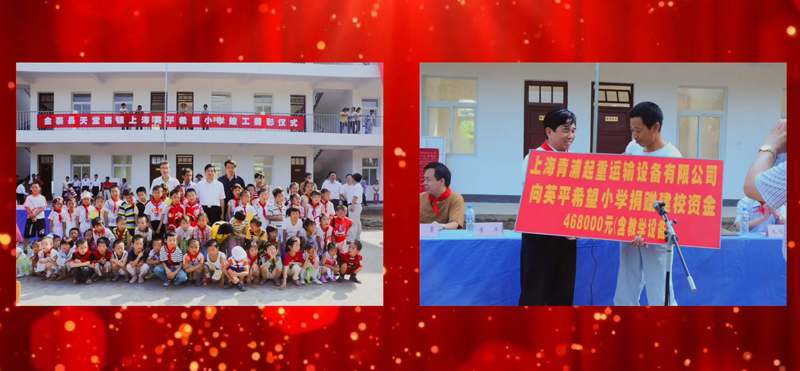
Upholding the philosophy "Prosperous yet rooted, give back with care", KDHI actively fulfills corporate social responsibility.
We responded to the national labor transfer policy and offered over 200 jobs in Qingxi, Shanghai. Total donations for poverty alleviation, education and elder welfare have reached nearly RMB 5 million, supporting hundreds of people. We constructed 2 Hope Primary Schools and set up a dedicated student aid fund with the Red Cross to assist disadvantaged students.
Guinness World Records China
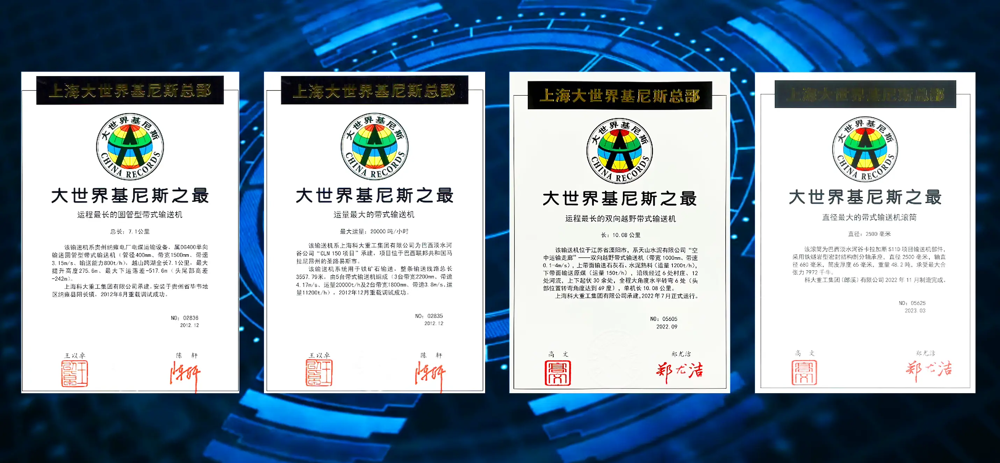
KDHI holds 4 Guinness World Records for its products, recognized as the best in China.
1. Longest Pipe Belt Conveyor
Total length: 7.12 km; Pipe diameter: 400 mm; Belt speed: 3.15 m/s; Capacity: 800 tph; Max lifting height: 275.6 m; Max downhill drop: -517.6 m; Head-tail height difference: -242 m; Location: Bijie, Guizhou, China; Commissioned: 2012.
2. Largest Capacity Belt Conveyor
Max capacity: 20,000 tph; Total length: 3,557.79 m; Quantity: 5 sets of belt conveyors; Belt width: 2,200 mm; Model: BW2200 mm; Client: CLN150 VALE, Brazil.
3. Longest Two-Way Over-Land Belt Conveyor
Total length: 10.08 km; Belt width: 1,000 mm; Belt speed: 0.1–4 m/s; Upper belt: Limestone & cement clinker, 1,200 tph; Lower belt: Raw coal, 150 tph; Route: 6 villages, 12 rivers, 30+ undulations; Horizontal curves: 6 large-angle (up to 69°); Client: Tianshan Cement Co., Ltd., Liyang, Jiangsu; Commissioned: July 2022.
4. Largest Diameter Pulley for Belt Conveyor
Pulley diameter: 2,500 mm; Shaft journal: 680 mm; Shell thickness: 65 mm; Weight: 48.2 tons; Max tension: 7,972 kN; Project: S11D, VALE, Brazil; Commissioned: November 2022.
The Maximum Belt Conveyors Records of KDHI
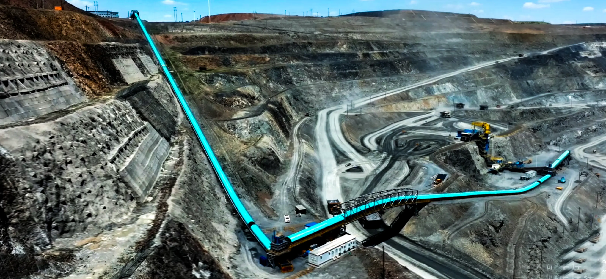
Up to now, KDHI has following records for her belt conveyors:
1. Maximum length of single belt conveyor:
Total length: 26 km; Location: Yellow river diversion, Shanxi, China.
2. Maximum length of pipe belt conveyor:
Total length: 7.1 km; Location: Nayong, Guizhou, China.
3. Maximum capacity Belt Conveyor:
Capacity: 23,500 tph; Location: Vale San Luis port terminal, Brazil.
4. Maximum length of Two-way transportation Belt Conveyor:
Length: 10,010 km; Location: Liyang Tianshan Cement, Liyang, Jiangsu.
5. Maximum Regenerative Downhill Belt Conveyor:
Regenerative power: 7 x 1,470 kW; Location: S11D VALE, Brazil.
6. Maximum capacity shiftable Belt Conveyor for IPCC:
Capacity: 9,700 tph; Location: Darhan Muminggan United Banner, Baotou City, Inner Mongolia, China.
7. Maximum Blast Furnace Feeding Belt Conveyor:
Furnace capacity: 5050 m³; Location: Third Blast Furnace of Zhanjiang Steel, Zhanjiang, China.
8. Maximum Installed Drive Power Belt Conveyor:
Drive power: 5 x 2,500 kW; Location: Row ore conveying system of Beijing Mining Co., Beijing, China.
9. Maximum Pulley diameter of Belt Conveyor:
Diameter of Pulley: 2,500 mm; Tension of Pulley: 7,972 kN; Location: S11D VALE, Brazil.
Customization of Preassembly
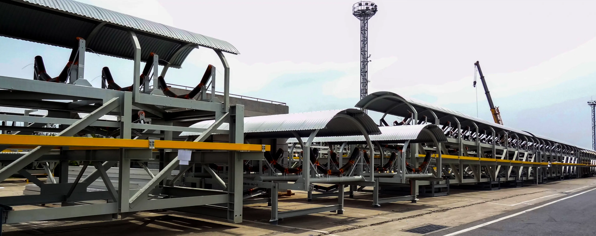
According to customers' actual site constraints such as capital budget, available skilled installation workforce and construction timeline, special pre-assembly terms can be specified in formal contracts.
All conveyor galleries and auxiliary belt conveyor facilities are fully pre-assembled inside our factory and shipped as integrated whole modules to the project site. This customized delivery scheme fully complies with all limits of on-site construction conditions and effectively shortens field installation workload.